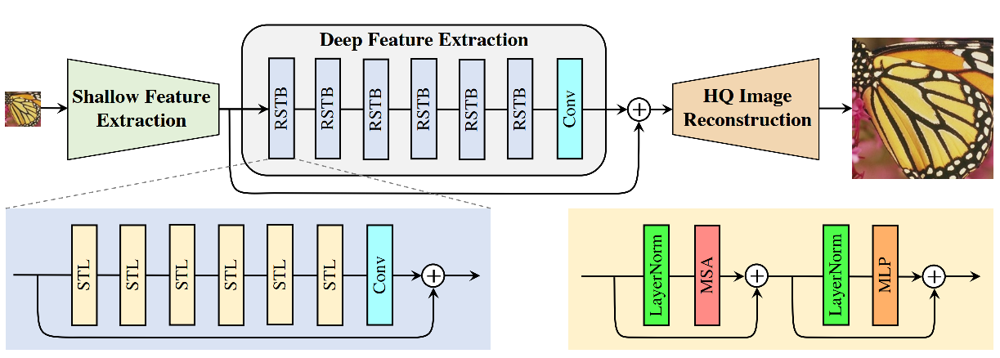
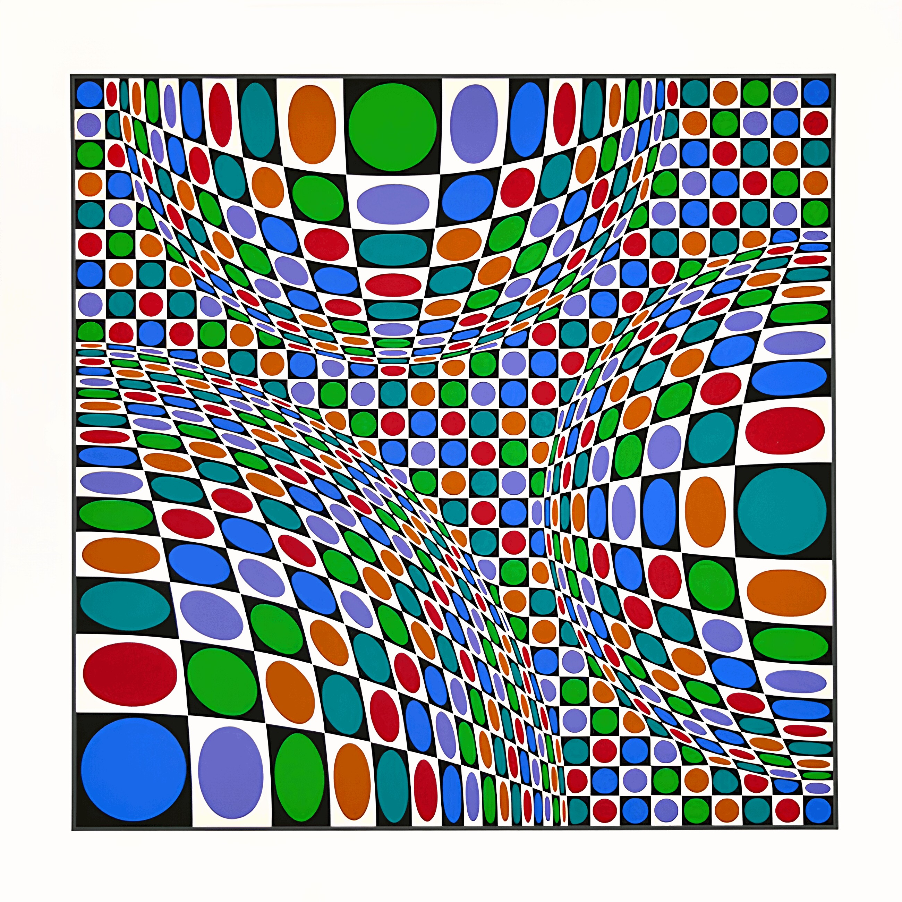

Super-resolution with PyTorch
Content from the webinar slides for easier browsing.
Definitions
LR
HR
SR
SISR
low resolution
high resolution
super-resolution = reconstruction of HR images from LR images
single-image super-resolution = SR using a single input image
History of super-resolution
2 main periods
- A rather slow history with various interpolation algorithms of increasing complexity before deep neural networks.
- An incredibly fast evolution since the advent of deep learning (DL).
SR history Pre-DL
Pixel-wise interpolation prior to DL.
Various methods ranging from simple (e.g. nearest-neighbour, bicubic) to complex (e.g. Gaussian process regression, iterative FIR Wiener filter) algorithms.
Nearest-neighbour interpolation
Simplest method of interpolation.
Simply uses the value of the nearest pixel.
Bicubic interpolation
Consists of determining the 16 coefficients \(a_{ij}\) in:
\[p(x, y) = \sum_{i=0}^3\sum_{i=0}^3 a\_{ij} x^i y^j\]
SR history with DL
Deep learning has seen a fast evolution marked by the successive emergence of various frameworks and architectures over the past 10 years.
Some key network architectures and frameworks:
- CNN
- GAN
- Transformers
These have all been applied to SR.
SR using (amongst others):
- Convolutional Neural Networks (SRCNN) – 2014
- Random Forests – 2015
- Perceptual loss – 2016
- Sub-pixel CNN – 2016
- ResNet (SRResNet) & Generative Adversarial Network (SRGAN) – 2017
- Enhanced SRGAN (ESRGAN) – 2018
- Predictive Filter Flow (PFF) – 2018
- Densely Residual Laplacian attention Network (DRLN) – 2019
- Second-order Attention Network (SAN) – 2019
- Learned downscaling with Content Adaptive Resampler (CAR) – 2019
- Holistic Attention Network (HAN) – 2020
- Swin Transformer – 2021
SRCNN
Given a low-resolution image Y, the first convolutional layer of the SRCNN extracts a set of feature maps. The second layer maps these feature maps nonlinearly to high-resolution patch representations. The last layer combines the predictions within a spatial neighbourhood to produce the final high-resolution image F(Y)
Can use sparse-coding-based methods.
SRGAN
Do not provide the best PSNR, but can give more realistic results by providing more texture (less smoothing).
GAN
SRGAN
Followed by the ESRGAN and many other flavours of SRGANs.
SwinIR
Attention
Mnih, V., Heess, N., & Graves, A. (2014). Recurrent models of visual attention. In Advances in neural information processing systems (pp. 2204-2212).
(cited 2769 times)
Vaswani, A., Shazeer, N., Parmar, N., Uszkoreit, J., Jones, L., Gomez, A. N., … & Polosukhin, I. (2017). Attention is all you need. In Advances in neural information processing systems (pp. 5998-6008)
(cited 30999 times…)
Transformers
Initially used for NLP to replace RNN as they allow parallelization. Now entering the domain of vision and others. Very performant with relatively few parameters.
Swin Transformer
The Swin Transformer improved the use of transformers to the vision domain.
Swin = Shifted WINdows
Swin transformer (left) vs transformer as initially applied to vision (right):
SwinIR

Training sets used
DIV2K, Flickr2K, and other datasets.
Models assessment
3 metrics commonly used:
Peak sign-to-noise ratio (PSNR) measured in dB:
\(\frac{\text{Maximum possible power of signal}}{\text{Power of noise (calculated as the mean squared error)}}\)
Calculated at the pixel level
\[PSNR = 10\,\cdot\,log_{10}\,\left(\frac{MAX_I^2}{MSE}\right)\]
Structural similarity index measure (SSIM):
Prediction of perceived image quality based on a “perfect” reference image.
\[SSIM(x,y) = \frac{(2\mu_x\mu_y + c_1) + (2 \sigma _{xy} + c_2)} {(\mu_x^2 + \mu_y^2+c_1) (\sigma_x^2 + \sigma_y^2+c_2)}\]
Mean of subjective quality ratings.
\[MOS = \frac{\sum_{n=1}^N R\_n}{N}\]
Metrics implementation
- Implement them yourself (using
torch.log10, etc.). - Use some library that implements them (e.g. kornia).
- Use code of open source project with good implementation (e.g. SwinIR).
- Use some higher level library that provides them (e.g. ignite).
- Implement them yourself (using
torch.log10, etc.). - Use some library that implements them (e.g. kornia).
- Use code of open source project with good implementation (e.g. SwinIR).
- Use some higher level library that provides them (e.g. ignite).
import kornia
psnr_value = kornia.metrics.psnr(input, target, max_val)
ssim_value = kornia.metrics.ssim(img1, img2, window_size, max_val=1.0, eps=1e-12)See the Kornia documentation for more info on kornia.metrics.psnr and kornia.metrics.ssim.
Benchmark datasets
Set5:
The Set5 dataset
A dataset consisting of 5 images which has been used for at least 18 years to assess SR methods.
How to get the dataset?
From the HuggingFace Datasets Hub with the HuggingFace datasets package:
from datasets import load_dataset
set5 = load_dataset('eugenesiow/Set5', 'bicubic_x4', split='validation')Dataset exploration
print(set5)
len(set5)
set5[0]
set5.shape
set5.column_names
set5.features
set5.set_format('torch', columns=['hr', 'lr'])
set5.formatBenchmarks
A 2012 review of interpolation methods for SR gives the metrics for a series of interpolation methods (using other datasets).
Interpolation methods
DL methods
The Papers with Code website lists available benchmarks on Set5:
PSNR vs number of parameters for different methods on Set5x4:
Comparison between SwinIR & a representative CNN-based model (RCAN) on classical SR images x4:
Let’s use SwinIR
# Get the model
git clone git@github.com:JingyunLiang/SwinIR.git
cd SwinIR
# Copy our test images in the repo
cp -r <some/path>/my_tests /testsets/my_tests
# Run the model on our images
python main_test_swinir.py --tile 400 --task real_sr --scale 4 --large_model --model_path model_zoo/swinir/003_realSR_BSRGAN_DFOWMFC_s64w8_SwinIR-L_x4_GAN.pth --folder_lq testsets/my_testsRan in 9 min on my machine with one GPU and 32GB of RAM.
Results
Initial images:
Upscaled images:

Metrics
We could use the PSNR and SSIM implementations from SwinIR, but let’s try the Kornia functions we mentioned earlier:
Let’s load the libraries we need:
import kornia
from PIL import Image
import torch
from torchvision import transformsThen, we load one pair images (LR and HR):
berlin1_lr = Image.open("<some/path>/lr/berlin_1945_1.jpg")
berlin1_hr = Image.open("<some/path>/hr/berlin_1945_1.png")We can display these images with:
berlin1_lr.show()
berlin1_hr.show()Now, we need to resize them so that they have identical dimensions and turn them into tensors:
preprocess = transforms.Compose([
transforms.Resize(256),
transforms.ToTensor()
])
berlin1_lr_t = preprocess(berlin1_lr)
berlin1_hr_t = preprocess(berlin1_hr)berlin1_lr_t.shape
berlin1_hr_t.shapetorch.Size([3, 267, 256])
torch.Size([3, 267, 256])We now have tensors with 3 dimensions:
- the channels (RGB),
- the height of the image (in pixels),
- the width of the image (in pixels).
As data processing is done in batch in ML, we need to add a 4th dimension: the batch size.
(It will be equal to 1 since we have a batch size of a single image).
batch_berlin1_lr_t = torch.unsqueeze(berlin1_lr_t, 0)
batch_berlin1_hr_t = torch.unsqueeze(berlin1_hr_t, 0)Our new tensors are now ready:
batch_berlin1_lr_t.shape
batch_berlin1_hr_t.shapetorch.Size([1, 3, 267, 256])
torch.Size([1, 3, 267, 256])PSNR
psnr_value = kornia.metrics.psnr(batch_berlin1_lr_t, batch_berlin1_hr_t, max_val=1.0)
psnr_value.item()33.379642486572266SSIM
ssim_map = kornia.metrics.ssim(
batch_berlin1_lr_t, batch_berlin1_hr_t, window_size=5, max_val=1.0, eps=1e-12)
ssim_map.mean().item()0.9868119359016418